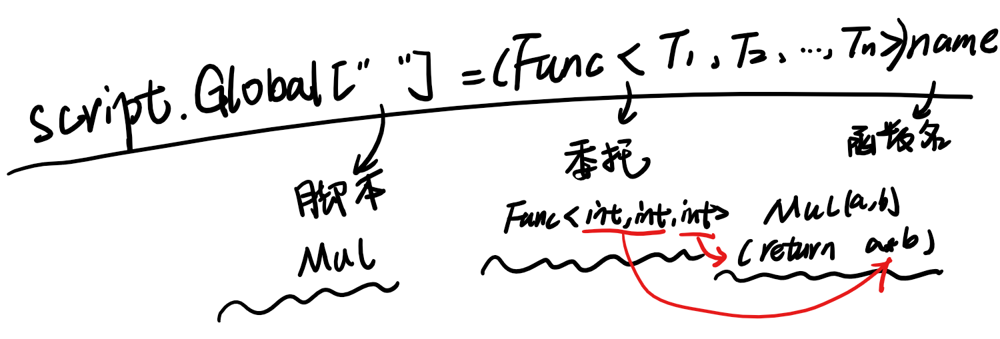
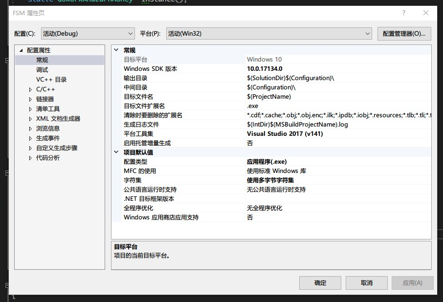
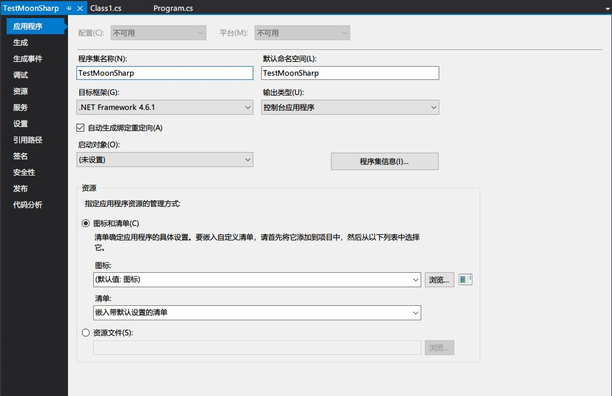

0x00
MoonSharp 是一个支持使用 C# 调用 Lua 的类库，这个系列是通过官网的教程来入门类库与 Lua。
如果有需要请配合我的代码食用。
现在，在 Visual Studio 中建立 c# 工程，并安装 MoonSharp 2.0：
- 新建工程
- 在 Nuget 程序包管理器控制台输入“Install-Package MoonSharp”安装 MoonShap
另外，如果在 Unity 中使用 MoonSharp 可以在 Github 找到示例。
0x01 执行 Lua 脚本
在 MoonSharp 中，Lua 脚本的执行都是通过 Script 类来完成的，我们可以通过不同的方式来执行 Lua 脚本。熟悉 Lua 的小伙伴应该已经了解动态执行 Lua 代码的方式，MoonSharp 提供的方法与之类似，比如将 Lua 保存在字符串中执行：
1. 通过静态方法执行字符串中的 Lua 脚本
1 | public double MoonSharpFactorial() |
Lua 是动态类型的语言，在与 C# 这种静态语言交互时，需要解决的第一个问题就是，得到的对象是什么类型。在 Lua 的 C API 中，对于类型的处理是进行检查是否可以转换为某种类型，并返回，而非检查类型。在 MoonSharp 中，使用 DynValue 类来对应 Lua 中的基本类型，也就是说，无论是 string 还是 number，当 MoonSharp 拿到一个变量时，都会用 DynValue 来保存在 C# 中，以供后续使用。在示例中，我们的脚本返回了 fact(5) 的执行结果，即为一个浮点数，保存在了 res 变量中，最后我们使用对应浮点数的 Number 成员得到返回的值。
Script 类是 MoonSharp 用来解释 Lua 脚本的类，这里用了 Script 类中的静态方法 RunString 来执行字符串中的脚本代码，同样我们也可以从文件中加载脚本，使用静态方法 RunFile。Script 类的其他功能和用法会在后面慢慢讲解。
2. 通过实例执行字符串中的 Lua 脚本
不使用静态方法来运行脚本，可以创建一个 Script 实例，通过新建的实例来调用 DoString 方法，执行脚本。
1 | public double MoonSharpFactorial() |
虽然我们可以创建很多 Script 的实例，但是在这些实例之间是不能直接共享数据的。我们保有一个 script 对象，就可以理解为保有了一个 Lua 的虚拟机，可以用来代表一个 Lua 环境，执行一些 Lua 脚本代码。在这个例子中，我们没有用脚本返回任何对象，而是使用了 script 实例主动去获取 Lua 脚本中定义的函数（了解 Lua 的小伙伴：我知道 Lua 的全局变量实质上就是一张表！），然后通过 Call 方法来调用获取到的 Lua 函数。
0x02 DynValue
DynValue 是 MoonSharp 用来处理“类型”的基本概念。在 MoonSharp 中，几乎所有的对象都是 DynValue 的实例，它可以代表 Lua 脚本中任何类型的值，比如 table，number，string，function 等等。
1 | DynValue luaFactFunction = script.Globals.Get("fact"); |
这是我们前面看到的使用方法，获得了方法，随后调用它。在上一节说到这里时，有小伙伴说过 Lua 的全局变量就是一张表，他说的没错，在 Lua 中“表（table）”这个唯一的数据结构，实际上是一种辅助数组（associative array），既可以使用数值作为索引，也可以使用字符串，甚至可以使用除 nil 外的任意类型的值作为索引（不了解 Lua 的小伙伴：也可以用一个表索引它自己？其他小伙伴：bingo）。
因此，除了上面的方法，MoonSharp 也提供了索引器的方法来得到一个值，比如上面的 fact 方法。
1 | script.Globals["fact"]; |
如果我们查看得到的对象，并不是一个 DynValue，而是具体的 MoonSharp.Interpreter.Closure，一个闭包，也就是 Lua 中的一个函数（从技术上讲，Lua 语言中只有闭包，没有函数）。
使用索引，自动地将对象转化为了 C# 中的 System.Object。
认识 DynValue
DynValue 中最重要的属性就是“类型（ Type ）”了。它是一个告诉我们 DynValue 中保存了什么类型数据的枚举类型。
DynValue 的一些属性只有在特定类型下才是有意义的，比如 Number 属性，只有当 DynValue 的 Type 为 DataType.Number 时，才是有意义的值。因此在使用 DynValue 包含的属性值之前，要记得检查 DynValue 的类型。
Lua （ 以及 python ）可以多值返回，为了处理这种特殊句法，MoonSharp 提供了特殊的 DynValue 类型，Tuple，一个 Tuple 就是一个 DynValue 数组，每个成员都是一个 DynValue，可以用索引来访问。
使用 DynValue
要使用 DynValue 创建新的对象，可以使用 DynValue 类中提供的工厂方法（factory methods），是一系列以 New 开头的方法（ NewString，NewNumber，NewBoolean 等等），来新建一个对应类型的对象。
此外，也可以使用 FromObject 方法，通过一个 object 创建 DynValue。Script 类中的成员函数 Call 就是利用 FromObject 将传入的参数转换为 DynValue 再调用重载版本。
多返回值
Lua 语言的一个特性是可以返回多个结果，但是在 C# 中只能返回单一结果。为了处理这种不一致，MoonSharp 提供了 Tuple 类，即为一个组合了多个 DynValue 的类型，其成员即为一个 DyValue 的数组。
当我们在脚本中返回多个返回值，会自动将其类型保存为 Tuple。
1 | DynValue ret = Script.RunString("return true, 'ciao', 2*3"); |
这里的得到的 ret 类型即为 Tuple，我们遍历其中的所有元素。
0x03 回调函数
在前面我们可以理解为执行了脚本之后，将所有脚本中定义的对象（数值，表，函数）都保存在了内存之中，使用 DynValue 封装起来了，我们在 C# 端需要使用时，就可以通过 Script 的实例去内存中拿。实际应用中，更多的情况是我们想要在宿主语言中定义一些 API，让 Lua 脚本去访问和使用。这里，就要谈谈怎么实现这一目标。
为了获得这种协同工作的能力，MoonSharp 使用回调函数（Calling back function）来封装 C# 函数，其本质就是一个 Func 委托，当我们需要将函数转换为委托，并在脚本的全局变量中设置对应的对象（不懂 Lua 的小伙伴：有点奇怪。其他小伙伴：Lua 中的函数是第一类值！）。
Lua 中的函数可以作为变量传递，完全可以将函数名看作一个指向函数的变量。因此在定义好 API 后，可以将 API 方法作为全局变量定义到 Lua 的全局表中。
1 | private static int Mul(int a, int b) |
在这个示例中，我们将 Mul 函数，强制转换为 Func 委托（Func<int, int, int>），并赋值给全局表中的“Mul“变量。暴露到了脚本中。最终得到的结果就是 C# 中定义的函数变成了脚本中的一个 function。
这里我们的代码中将 Mul 方法显式转换为了委托。同样也可以转换 MoonSharp.Interpreter.CallbackFunction，再转换为脚本中的 function。

对于一个简单任务，将 1 到 10 累加的任务，可以使用：
- 迭代器作为 API，传到 Lua 脚本中在泛型 for 循环中使用
1 | private static IEnumerable<int> GetNumbers() |
- 使用 List 返回值自动转换为表
1 | private static List<int> GetNumberList() |
- 使用 MoonSharp 提供的 Table 类构建一个 Lua 表，可以构建空表或使用 DynValue 初始化表
1 | private static Table GetNumberTable(Script script) |
小插曲：
1 | string scriptCode = @" |
上述代码中，返回了以表“{…}”作为参数调用 dosum 方法的结果。下面由熟悉 Lua 的小伙伴略微做一下讲解，当函数只有一个参数，且此参数为字符串常量或表构造器时，括号是可选的。
在 lua 交互式模式下尝试一下：
1 | function hi (s) |
这几种调用都是正确的，但是
1 | s = "something" |
说到 return 多说一句：Lua 中的 return 必须紧跟 end 语句，否则会报错，但有一个特例，可以有 print 方法，并且 print 也会执行，如果非要逆着这个规矩来，就只能将 return 放在 do … end 中。
1 | function foo() |
0x04 类型转换
CLR 与 Lua 类型的对应
CLR （ Common Language Runtime ）公共语言运行库，与 Java 虚拟机一样是一个运行时环境，负责资源管理（内存分配和垃圾收集等），并保证应用和底层操作系统之间必要的分离。
- DynValue
- 自定义转换器（ converter ）
比使用自动转换更快。
自定义转换器是全局的，对所有的脚本都会造成影响。只需要在 Script.GlobalOptions.CustomConverters 设置合适的回调函数即可。
1 | // convert StringBuilder to uppercase strings |
如果自定义转换器返回值为 null，Moonsharp 会使用自动转换。关于自动转换的规则可以参阅官方，或参考文末附录I。
0xff
附录I
（1）从 CLR 类型自动转换到 MoonSharp 类型
转换时机：
- When returning an object from a function called by script
- When returning an object from a property in a user data
- When setting a value in a table using the indexing operator
- When calling DynValue.FromObject
- When using any overload of functions which takes a System.Object in place of a DynValue
| CLR 类型 | C# | Lua | Notes |
|---|---|---|---|
| void | （no value） | 只能在作为方法的返回值时应用 | |
| null | nil | 任何的 null 都会转换为 nil | |
| MoonSharp.Interpreter.DynValue | * | 不多说了 | |
| System.SByte | sbyte | number | |
| System.Byte | byte | number | |
| System.Int16 | short | number | |
| System.UInt16 | ushort | number | |
| System.Int32 | int | number | |
| System.UInt32 | uint | number | |
| System.Int64 | long | number | 这个转换会导致精度损失 |
| System.UInt64 | ulong | number | 这个转换会导致精度损失 |
| System.Single | float | number | |
| System.Decimal | decimal | number | 这个转换会导致精度损失 |
| System.Double | double | number | |
| System.Boolean | bool | boolean | |
| System.String | string | string | |
| System.Text.StringBuilder | string | ||
| System.Char | char | string | |
| MoonSharp.Interpreter.Table | table | ||
| MoonSharp.Interpreter.CallbackFunction | function | ||
| System.Delegate | function | ||
| System.Object | object | userdata | 当这个类型被注册为 userdata 时 |
| System.Type | userdata | 当这个类型被注册为 userdata 时，静态成员访问 | |
| MoonSharp.Interpreter.Closure | function | ||
| System.Reflection.MethodInfo | function | ||
| System.Collections.IList | table | 转换得到的 table 是从 1 开始索引的，所有值都会根据规则转换 | |
| System.Collections.IDictionary | table | 所有的键和值都会根据规则转换 | |
| System.Collections.IEnumerable | iterator | 所有的值都会根据规则转换 | |
| System.Collections.IEnumerator | iterator | 所有的值都会根据规则转换 |
无法进行转换的会抛出 ScriptRuntimeException 异常。
（2）从 MoonSharp 类型自动转换（Standard）到 CLR 类型
（ 比上一节更复杂，分成了 Standard 和 constrained 两种 ）每当要求将 DynValue 转换为对象而不指定实际要接收的内容时，使用 Standard 方法：
- 当调用 DynValue.ToObject 方法时
- When retrieving values from a table using indexers
- In some specific subcase of the constrained conversion (see below)
| MoonSharp type | CLR type | Notes |
|---|---|---|
| nil | null | 所有这个一一对应啊 |
| boolean | System.Boolean | |
| number | System.Double | |
| string | System.String | |
| function | MoonSharp.Interpreter.Closure | 如果 DataType 是 Function |
| function | MoonSharp.Interpreter.CallbackFunction | 如果 DataType 是 ClrFunction. |
| table | MoonSharp.Interpreter.Table | |
| tuple | MoonSharp.Interpreter.DynValue[] | |
| userdata | (special) | 返回保存在 userdata 中的对象。如果是 “static” userdata 返回 Type。 |
（3）从 MoonSharp 类型自动转换（Constrained）到 CLR 类型
（更复杂的来了）MoonSharp 值必须保存在一个给定类型的 CLR 变量中，转换的方法有..很多…
当：
- When calling DynValue.ToObject
- When converting a script value to a parameter in a CLR function call, or property set
MoonSharp attempts very hard to convert values, but the conversion surely shows some limits, specially when tables are involved.
In this case, the conversion is more a process than a simple table of mapping, so let’s analyze the target types one by one.
特殊地：
- if the target is of type MoonSharp.Interpreter.DynValue it is not converted and the original value is returned.
- If the target is of type System.Object, the default conversion, detailed before, is applied.
- In case of a nil value to be mapped, null is mapped to reference types and nullable value types and an attempt to match a default value is used in some cases (for example function calls for which a default is specified) for non-nullable value types, otherwise an exception is thrown.
- In case of no value provided, the default value is used if possible.
Strings
Strings can be automatically converted to System.String, System.Text.StringBuilder or System.Char.
Booleans
Booleans can be automatically converted to System.Boolean and/or System.Nullable<System.Boolean>. They can also be converted to System.String, System.Text.StringBuilder or System.Char.
Numbers
Numbers can be automatically converted over System.SByte, System.Byte, System.Int16, System.UInt16, System.Int32, System.UInt32, System.Int64, System.UInt64, System.Single, System.Decimal, System.Double and their nullable counterparts. They can also be converted to System.String, System.Text.StringBuilder or System.Char.
Functions
Script functions are converted to MoonSharp.Interpreter.Closure or MoonSharp.Interpreter.ScriptFunctionDelegate. Callback functions are converted to MoonSharp.Interpreter.ClrFunction or System.Func<ScriptExecutionContext, CallbackArguments, DynValue>.
Userdata
Userdatas are converted only if they are not “static” (see the userdata section in the tutorials). They are converted if the desired type can be assigned with the object to be converted.
They can also be converted to System.String, System.Text.StringBuilder or System.Char, by calling the object ToString() method.
Tables
Tables can be converted to:
- MoonSharp.Interpreter.Table - of course
- Types assignable from Dictionary<DynValue, DynValue>.
- Types assignable from Dictionary<object, object>. Keys and values are mapped using the default mapping.
- Types assignable from List
. - Types assignable from List
- Types assignable from DynValue[].
- Types assignable from object[]. Elements are mapped using the default mapping.
- T[], IList
, List , ICollection , IEnumerable , where T is a convertible type (including other lists, etc.) - IDictionary<K,V>, Dictionary<K,V>, where K and V are a convertible type (including other lists, etc.)
Note that conversion to generics and typed arrays have the following limitations:
- They are slower, as types are created at runtime through reflection
- If the item type is a value type, there is the potential that it will introduce incompatibilities with iOS and other platforms running in AOT mode. Do tests beforehand.
- To compensate with these problems, you can always add custom converters in a later stage of development!
发现了一个问题，当我使用 VS 打开 C++ 工程时，（项目-xxx属性 or 右键工程-属性）可以打开属性页；但是安装了 unity tool 后，c# 工程却只能打开一个与文件相似的页面，本不可以打开，需要对 unity tool 进行设置，将属性页打开，但为什么不是正常的属性页呢？


为什么哟?